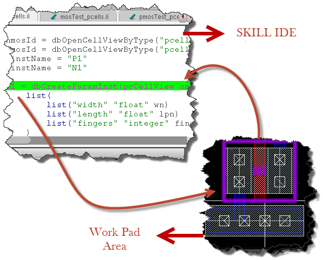

Virtuoso Quick Start: Debugging Pcells
|
This document provides you a quick overview on how SKILL Pcells use the following commands.
For more information, see |
|
Pcell IDE — Debug Commands
This section lists various commands for debugging SKILL Pcells.
- Debugging the Super Master
- Debugging an Instance
- Debugging Hierarchical Pcells
- Debugging an Abutment
- Cross-highlight between Pcell IDE and SKILL IDE
Debugging the Super Master
To debug the Pcell super master, you need to perform the following steps:
- Select the Pcell source filename from the Source File drop-down list of the Pcell IDE assistant.
- Debug the Pcell super master by using one of the methods provided in the table below:
Table 1-1 Debugging Methods
| Debugging Methods | Steps |
|---|---|
-
After the evaluation is successfully completed, the Pcell default parameters are displayed in the Pcell IDE assistant. However, these parameters are not editable, as shown below.Figure 1-1 The Debug Super Master
Debugging an Instance
To debug a Pcell instance, you need to perform the following steps:
- Select a Pcell instance at any level of the hierarchy design.
-
Select the Pcell source file path from the Source File drop-down list.If the Pcell source file does not match with the selected Pcell instance, the Run button on the Pcell IDE toolbar is not enabled and the “SuperMaster not loaded" message is displayed. To start debugging the Pcell instance, you need to either select the corresponding Pcell instance, or select the correct Pcell source file to enable the Run button on the Pcell IDE toolbar. There might be instances where the Run button is not enabled on the Pcell IDE toolbar after you load the Pcell source file. In such cases, you need to type the function call either in CIW or SKILL IDE to enable the Run button on the Pcell IDE toolbar. For more information, refer to Table 1-1.
- Pcell parameters are displayed in the Pcell IDE assistant. You can modify the value of any parameter. In addition, you can copy another Pcell instance parameter using the Copy button.
-
On the SKILL IDE window, click Step to step through the Pcell source code. The graphic is incrementally updated and the Pcell instance is displayed in the editor window, as shown below.Figure 1-2 Pcell Instance in the Editor Window
Debugging Hierarchical Pcells
To debug Pcells at any of the displayed hierarchical levels, you need to perform the following steps:
- Turn on the Debug Hierarchy Pcell mode by clicking the Debug Hier Mode button from the Pcell IDE toolbar, any time while debugging Pcells.
-
When the
dbCreateParamInstSKILL statement is met, click Step or Continue from the SKILL IDE window. The Load Pcell Source File form is displayed in the Pcell IDE assistant for you to select the Pcell source file.
Figure 1-3 Load Pcell Source File Window - The Load Pcell Source File form shows the debugged super master's library name, cell name, and view name.
-
You need to select the Pcell source filename in Source File drop-down list.
- Click OK to debug the next-level Pcell.
- Click Cancel to skip the next-level Pcell debugging.
Debugging an Abutment
To debug a Pcell abutment, you need to perform the following steps:
- Click the Debug Abutment button from the Pcell IDE toolbar.
- Select the abutment action and set the desired abutment events to be debugged.
-
In the Pcell IDE assistant, fill in the abutment instance and pin information.
Figure 1-4 Debug an Abutment - Click the Run button to start the abutment simulation.
To debug the Pcell evaluation during debug abutment, you can turn on the Debug Hierarchy Pcell mode by clicking the Debug Hier Mode button when any one of these functions —
dbReplaceProp, dbReplacePropList, or dbReplaceInstParamList is called.Cross-highlight between Pcell IDE and SKILL IDE
You can cross-highlight between the graphic objects and the source code.
To do this, you can do either of the following:
- If you select an object from the editor window, the corresponding SKILL statement is highlighted in the SKILL IDE window.
- On the other hand, if you select a SKILL statement from the SKILL IDE window, the corresponding object(s) is highlighted in the editor window.

Figure 1-5 Cross-highlight Pcell IDE and SKILL IDE
Return to top